Selected Work
Portfolio
Research grouped by thematic focus. Each card highlights a representative study — drop the key figure from the paper into its image slot.
Extreme Climate & Hazard and Disasters
Wildfire regime dynamics, burn-area and emissions modeling, and disaster-damage attribution across fire-prone landscapes.
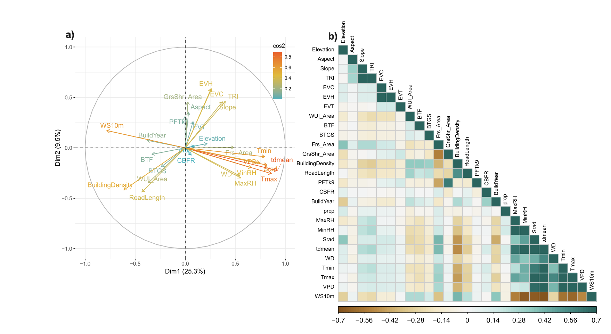
Explaining building damage from wildfires in California
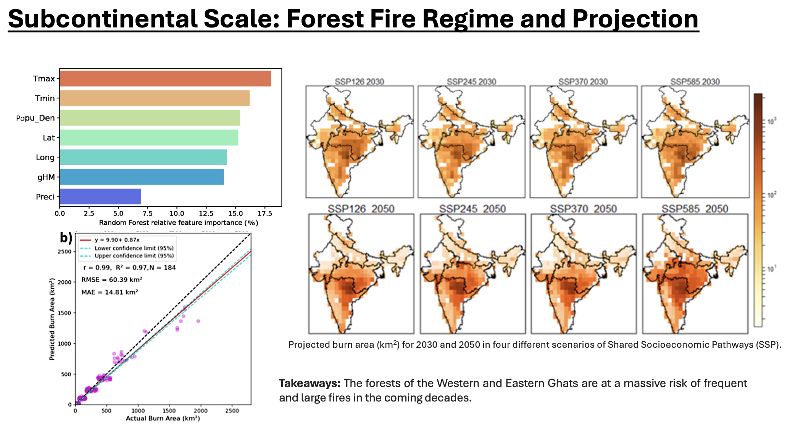
Fire regime dynamics and burn area modeling over India
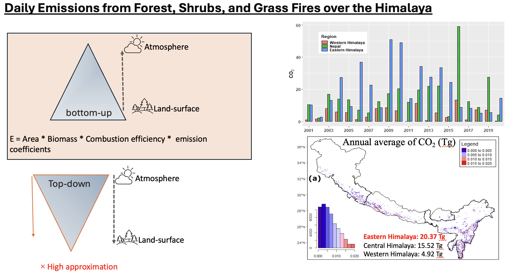
Long-term forest fire emissions over the Himalaya
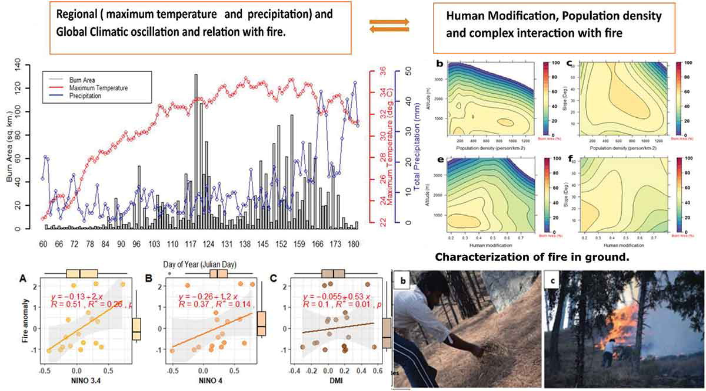
Spatio-temporal characterization of landscape fire in relation to anthropogenic activity and climatic variability, Western Himalaya
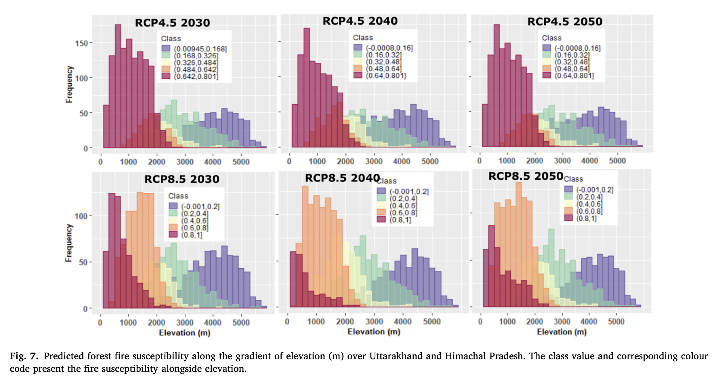
Modeling and prediction of fire occurrences along an elevational gradient in Western Himalayas
Climate & Atmospheric Change
Atmospheric and surface response to abrupt anthropogenic shifts — air quality, land surface temperature, and emissions.
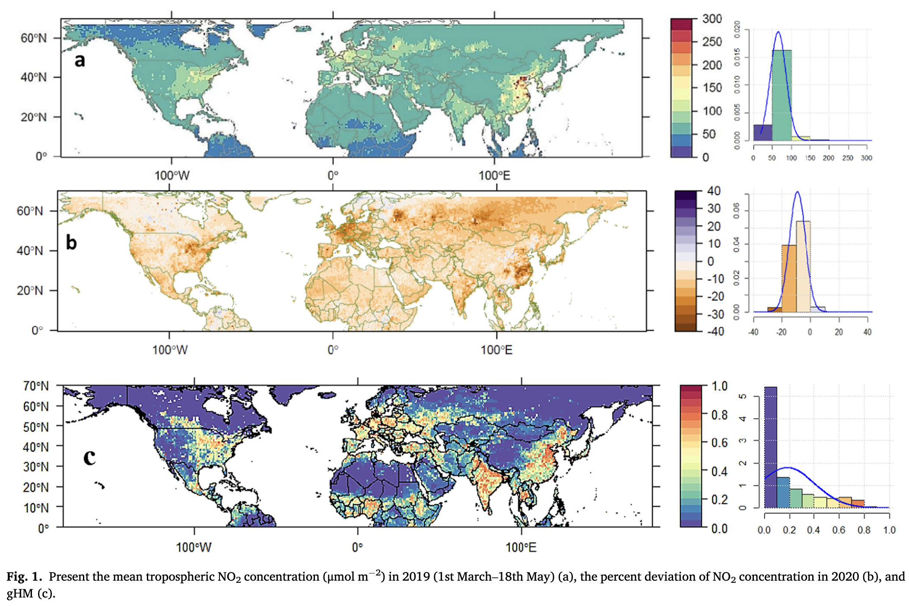
Impacts of COVID-19 lockdown on NO2 and PM2.5 in major cities
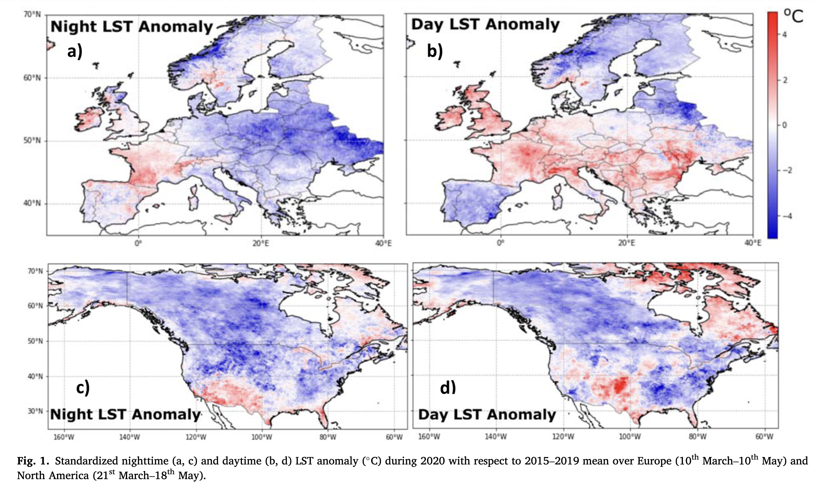
Impact of lockdown on land surface temperature, Europe & N. America
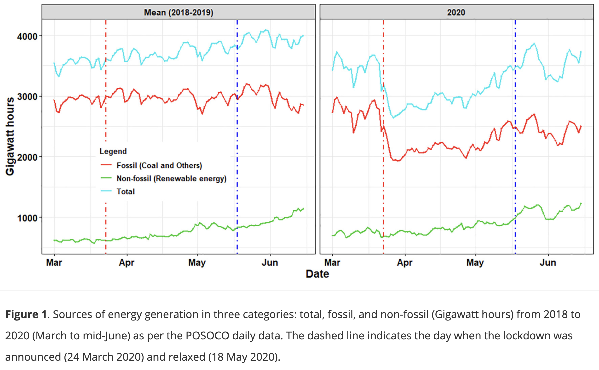
Short-term decline in anthropogenic CO2 emission in India
Vegetation & Essential Climate Variables
Satellite-derived biophysical and biochemical retrievals for vegetation, agriculture, and land-cover monitoring.
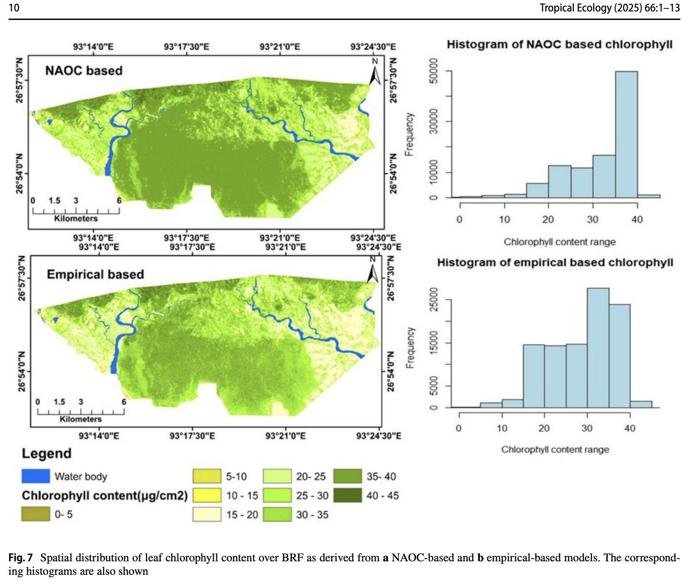
Estimating forest biophysical & biochemical parameters, Behali Reserve Forest
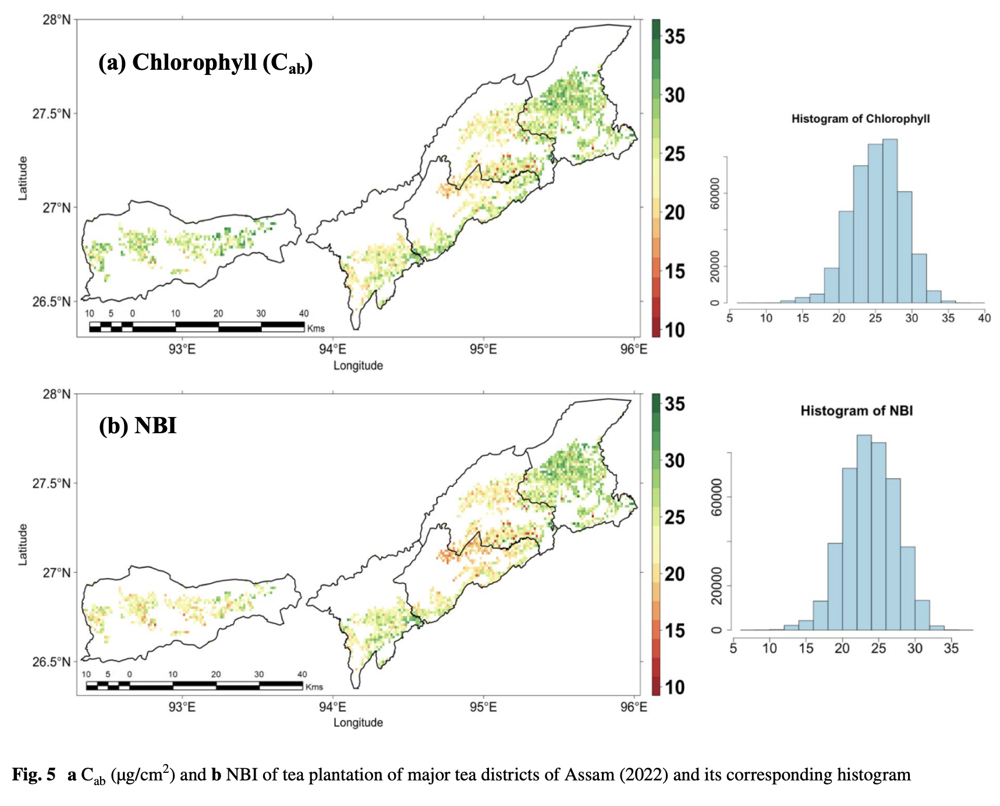
Assessing tea plantation biophysical characteristics, NE India
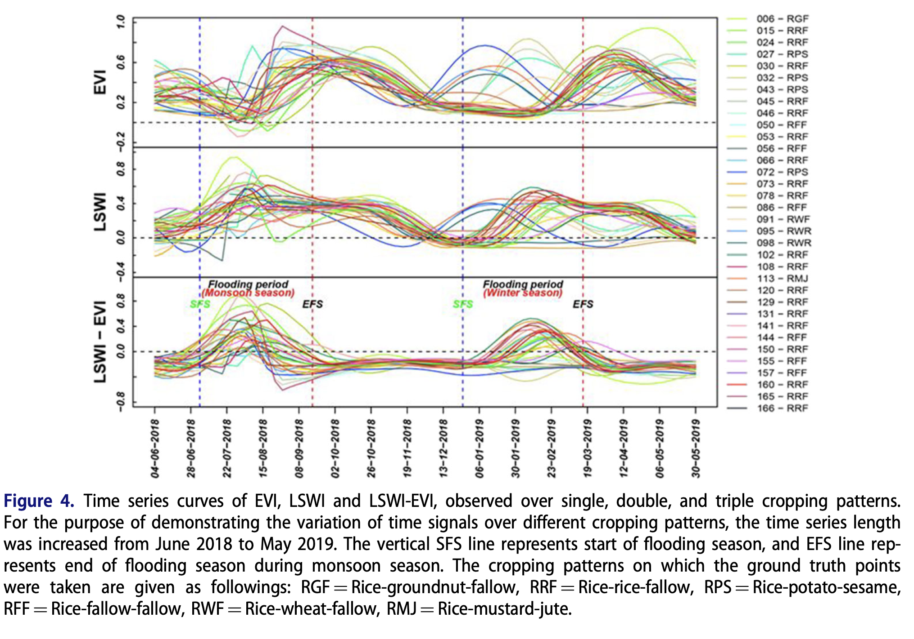
Mapping active paddy rice area over monsoon Asia
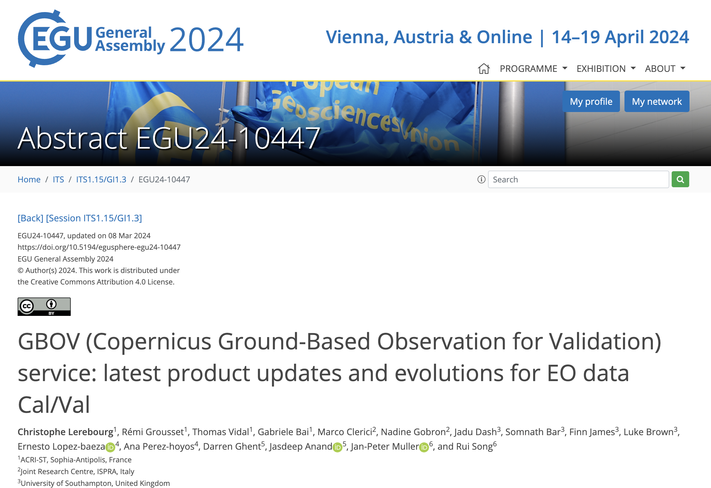
GBOV service: Latest product updates for EO data validation
Climate Mitigation & Policy
Coastal vulnerability, ecosystem resilience, and resource management under a changing climate.
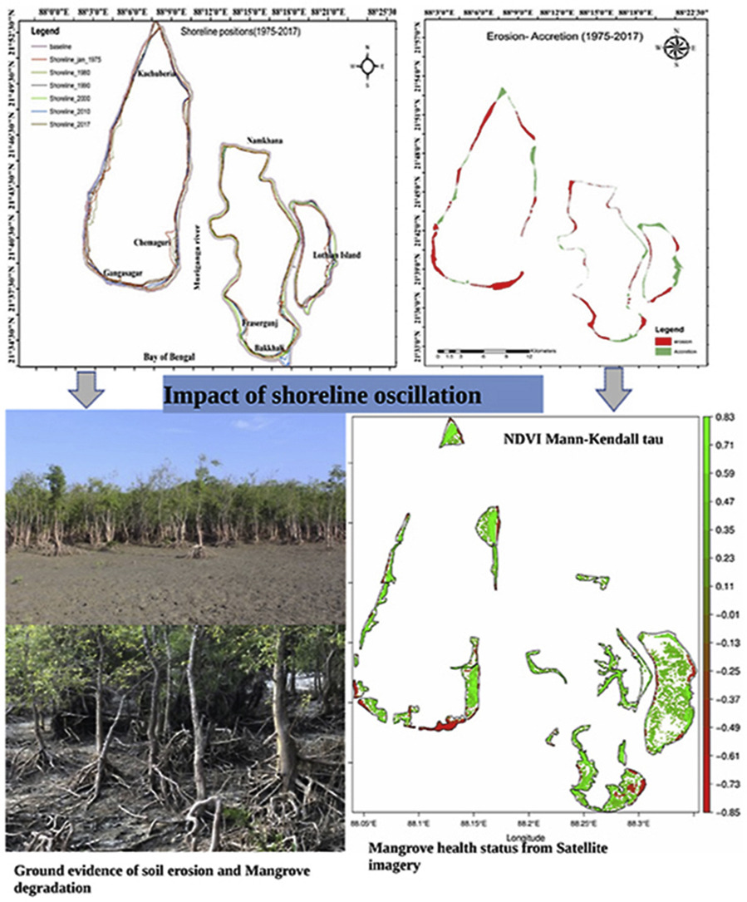
Shoreline changes and impact on Sundarbans mangrove ecosystems
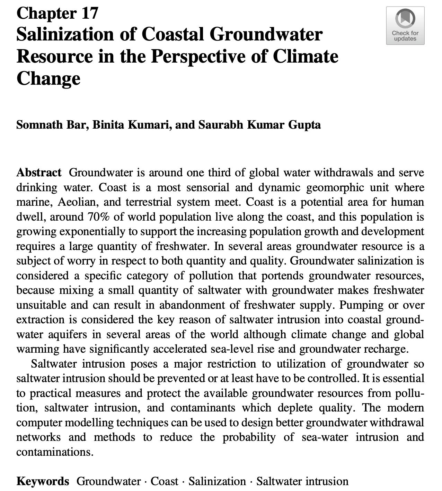
Salinization of coastal groundwater under climate change
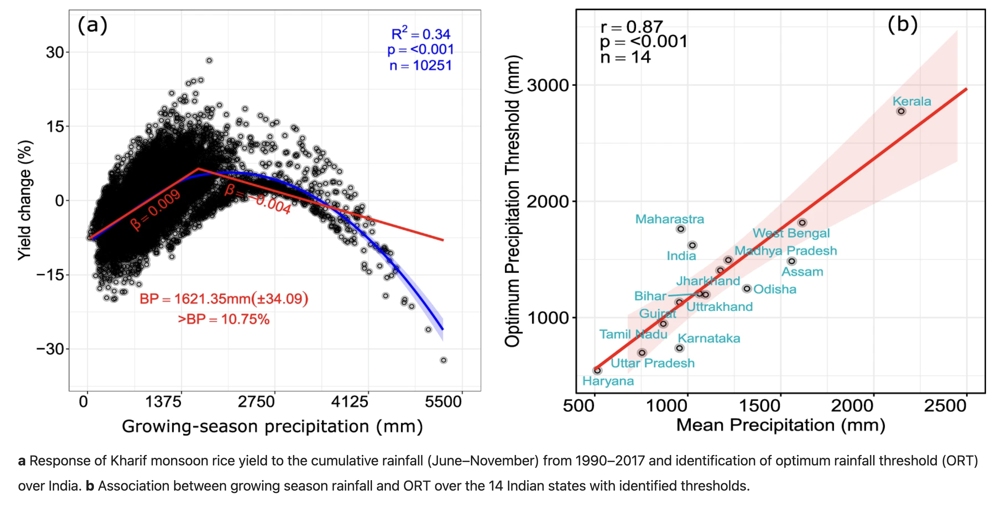
Optimal rainfall threshold for monsoon rice production in India varies across space and time
Earth Observation & Ecology
Multi-sensor satellite data and cloud-computing platforms applied to ecological and land-surface monitoring.
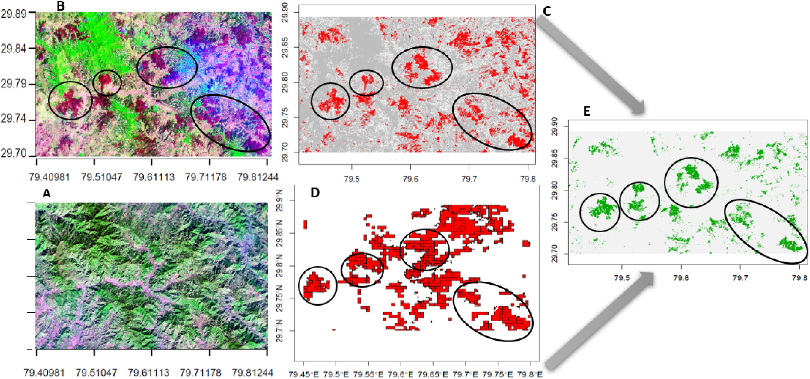
Forest fire burn area mapping using machine learning algorithms on GEE cloud platform over Uttarakhand, Western Himalaya (Landsat-8 & Sentinel-2)
Space for upcoming work
Space for upcoming work